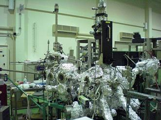

逆光電子分光法を用いた非占有電子状態の研究
光電子分光法は、物質に光を照射したときに電子が物質外に放出される外部光電効果を用いている。 このような光電子分光法は物質の電子状態を理解する上で欠くことのできない重要なツールである。 現在、入射光に放射光やレーザー光源を用いた角度分解光電子分光法では、1 meV を切るエネルギー分解能で精密な測定が可能となっている。逆光電子分光(IPES)は電子を物質に入射して放出される光を測定する実験手法である。 物質に入射された電子はより低い電子状態へ緩和しようとするが、フェルミ準位以下はすでに占有されているため、フェルミ準位より上の非占有状態へ落ち込む。 このとき、緩和の際に放出される光のエネルギーを測定することで、エネルギー保存則から緩和した先の電子状態密度が直接測定できる。

角度分解逆光電子分光装置
角度分解逆光電子分光装置
逆光電子分光
Inverse Photoemission Spectroscopy : IPES
一方、TPE モードでは試料から放出された様々なエネルギーの光を同時検出するので効率が良く、入射電子のエネルギーを変化させることで共鳴逆光電子分光が可能であるが、スリットや回折格子といった分光系により分光するため検出される光は暗くなってしまう。
角度分解逆光電子分光法は、上述した逆光電子分光法において入射電子の入射角度をかえる手法で、この測定から非占有状態のバンド分散を得ることが出来る。